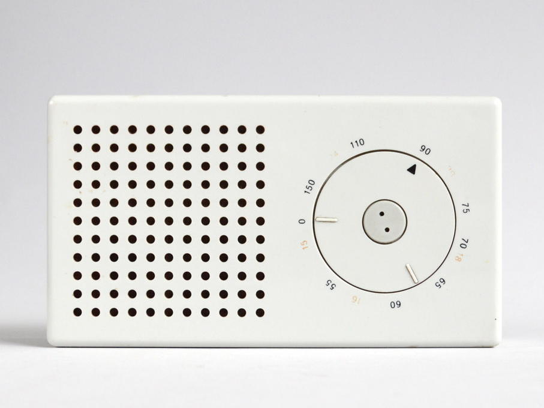
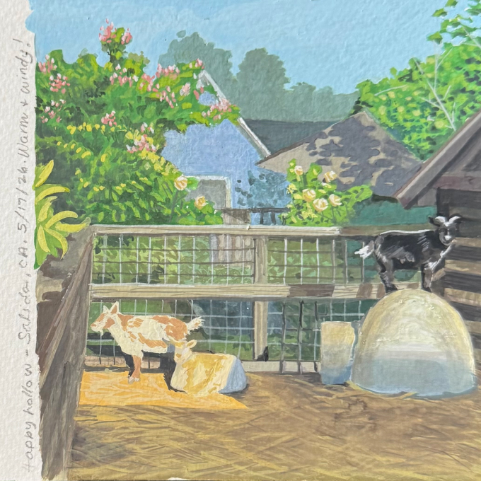
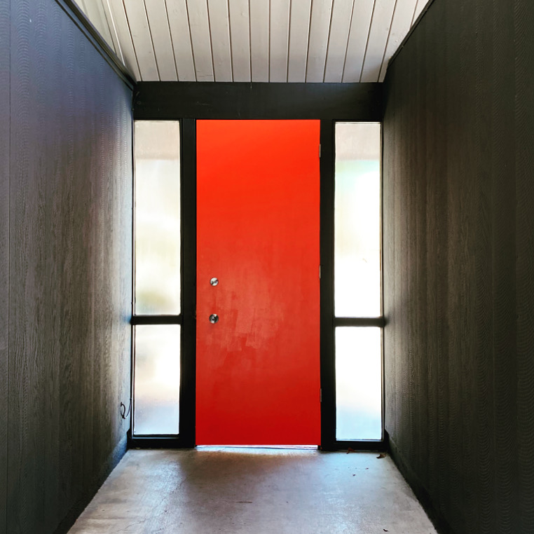
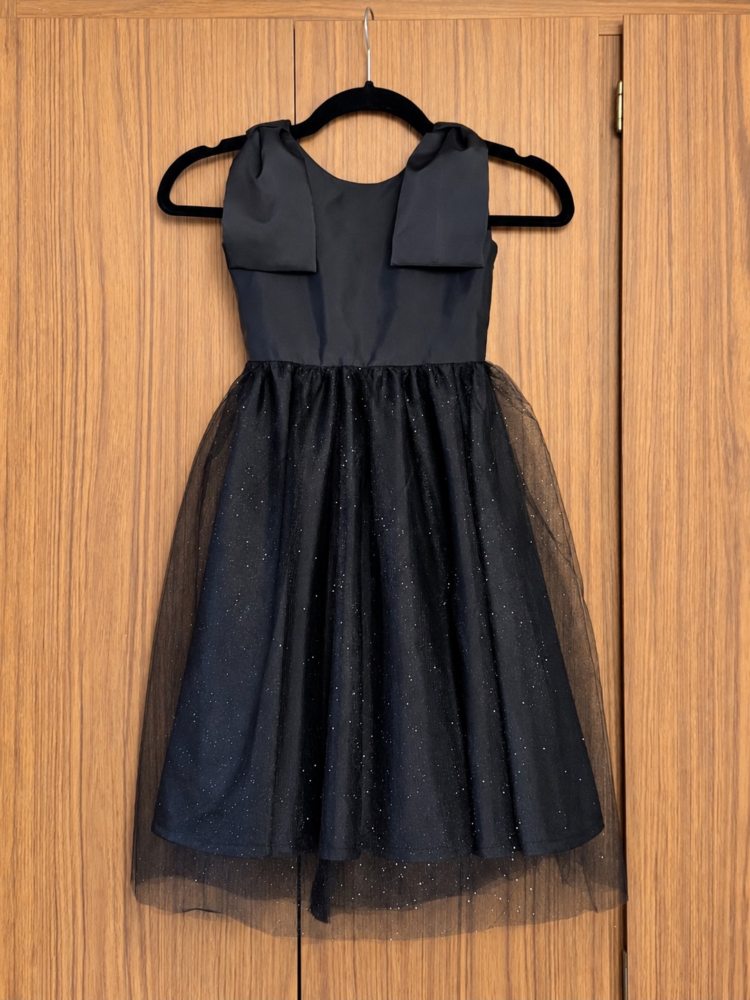

I’ve spent the bulk of my 20-year design career serving the financial needs of small business customers, most recently as Director of Design for the Money Movement Services organization at Intuit. I’m most energized when leading and working alongside a high-performing multi-disciplinary design team. As a leader, practitioner, and partner I’m particularly effective at crafting beautiful experiences, bringing structure to ambiguity, and translating user needs into business value.
I embody clarity and kindness together. I’m direct enough to define and hold a high bar, and human enough to cultivate a community of empowered makers.

My ethos aligns with Dieter Rams’ “good design is as little design as possible.” To me, successful UX means people complete their task effortlessly — without a single unnecessary click.
“Working with Shawna has taught me so much about the importance of simplification and navigating tough stakeholders while advocating for the right customer problem. I'm a better professional because of her, she has been a strong mentor, reliable leader, and a friend to me.”— Former teammate, Intuit
Outside of work, I enjoy painting, restoring and furnishing my Eichler, and crafting bespoke garments for myself and others.


